🔑 Đăng nhập
- Truy cập crm.armyenglish.edu.vn
- Nhập Tên đăng nhập và Mật khẩu
- Vào Avatar góc phải → Chỉnh sửa thông tin cá nhân để cập nhật Email, Địa chỉ, Ảnh đại diện…
✅ Phê duyệt hành động
Một số thao tác trong hệ thống cần được Giám đốc trung tâm (GĐTT) phê duyệt trước khi chính thức có hiệu lực. Sau khi được duyệt, hệ thống sẽ tự động ghi nhận hành động và cập nhật dữ liệu liên quan.
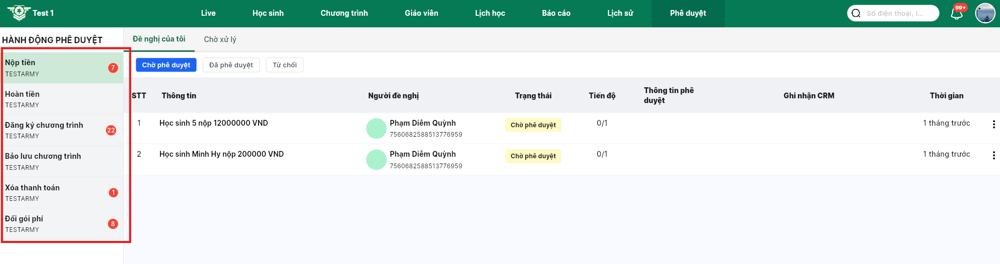
Màn hình minh họa: danh sách hành động đang chờ phê duyệt
🧭 Các loại hành động cần phê duyệt
- Nộp tiền: Khi học sinh hoặc nhân viên nộp học phí, GĐTT phải duyệt thì hệ thống mới cộng số tiền này vào tài khoản.
- Hoàn tiền: Áp dụng khi cần trả lại học phí; chỉ có hiệu lực khi GĐTT phê duyệt.
- Đăng ký chương trình (Mua chương trình / Tái phí): Học sinh đăng ký chương trình mới hoặc tái phí, hệ thống chỉ ghi nhận sau khi GĐTT duyệt yêu cầu.
- Bảo lưu chương trình: Khi học sinh xin tạm ngừng học, bảo lưu phải được GĐTT duyệt mới chuyển trạng thái chính thức.
-
Xóa hợp đồng:
Sau khi được duyệt, hệ thống sẽ:
– Xóa hợp đồng đó -
Đổi gói phí:
Dùng khi học sinh cần thay đổi gói phí đã cọc.
Sau khi duyệt, hệ thống tự động:
– Cập nhật số tiền cọc đã đóng
– Ghi nhận gói phí mới
– Điều chỉnh giảm trừ khác/voucher (nếu có)
🗂️ Cách kiểm tra & phê duyệt
- Vào menu Phê duyệt trên thanh điều hướng.
- Chọn tab Đề nghị của tôi để xem các yêu cầu bạn đã gửi, hoặc tab Chờ xử lý nếu bạn là GĐTT cần duyệt.
- Chọn loại hành động muốn xem: nộp tiền, hoàn tiền, đăng ký chương trình, bảo lưu, xóa hợp đồng, đổi gói phí…
- Mở chi tiết đề nghị để kiểm tra thông tin → bấm Duyệt hoặc Từ chối.
⚠️ Sau khi hành động được duyệt, dữ liệu sẽ tự động cập nhật và hiển thị trong phần Lịch sử của học sinh.
📎 File đính kèm trong các hành động phê duyệt
Tất cả các hành động cần GĐTT phê duyệt trong CRM đều hỗ trợ tải lên file PDF để bổ sung chứng từ. Chức năng này áp dụng cho toàn bộ các loại đề nghị:
- Nộp tiền
- Hoàn tiền
- Đăng ký chương trình (mới, học thử, fullfee, tái phí…)
- Đổi gói phí khi đang cọc
- Bảo lưu chương trình
- Xóa hợp đồng
- Các hành động khác có yêu cầu phê duyệt
📤 Cách tải file PDF lên
- Vào menu Phê duyệt → Đề nghị của tôi.
- Tại dòng đề nghị cần bổ sung chứng từ → chuyển đến cột File đính kèm.
- Bấm vào biểu tượng ⋮ → chọn Thêm file.
- Chọn file PDF từ máy → tải lên.
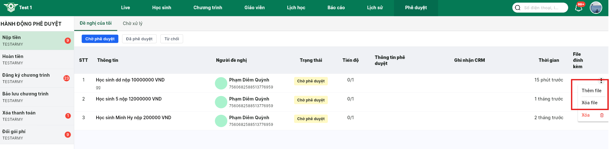
🗑 Xóa hoặc thay thế file
Nếu muốn sửa hoặc thay file mới → mở menu ⋮ → chọn Xóa file, sau đó upload lại file đúng.
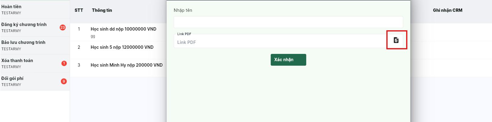
📌 Quy định file
- Chỉ hỗ trợ PDF.
- Dung lượng tối đa: 10 MB.
- Có thể thêm hoặc xoá file trước khi đề nghị được GĐTT duyệt.
File đính kèm giúp GĐTT có đủ thông tin để phê duyệt nhanh hơn, đặc biệt trong các trường hợp đối soát tiền, chứng từ nộp phí, hóa đơn hoặc yêu cầu thay đổi gói.
🔄 1. Chuyển phí & buổi học (cùng trung tâm)
Chức năng này dùng để chuyển toàn bộ số buổi và số tiền còn lại từ học sinh này sang học sinh khác trong cùng trung tâm.
Điều kiện:
- Học sinh cho: đã mua chương trình, đang ở trạng thái Chờ xếp lớp
- Học sinh nhận: đã mua chương trình
Kết quả: chuyển toàn bộ buổi học + số tiền còn lại sang học sinh nhận.
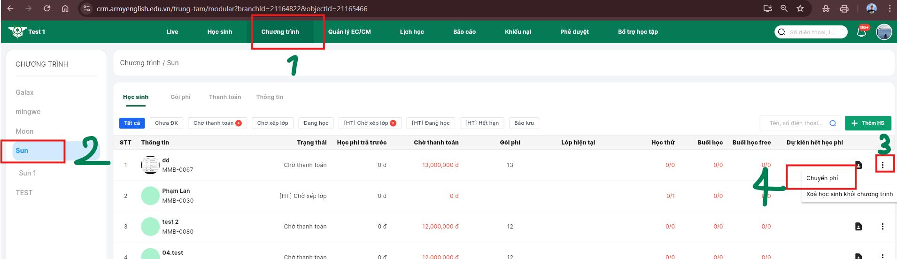
- Vào menu Chương trình.
- Chọn chương trình của học sinh.
- Tại danh sách học sinh, bấm ⋮.
- Chọn Chuyển phí.
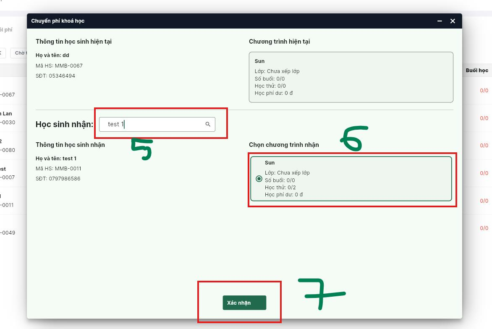
- Tìm và chọn học sinh nhận.
- Chọn chương trình nhận.
- Bấm Xác nhận .
🏫 2. Chuyển học sinh sang trung tâm khác
Chức năng này dùng để chuyển học sinh sang trung tâm khác và gán lại nhân viên phụ trách (sale) tại trung tâm mới.
Điều kiện:
- Học sinh phải được cho ra khỏi lớp trước khi thực hiện chuyển trung tâm.
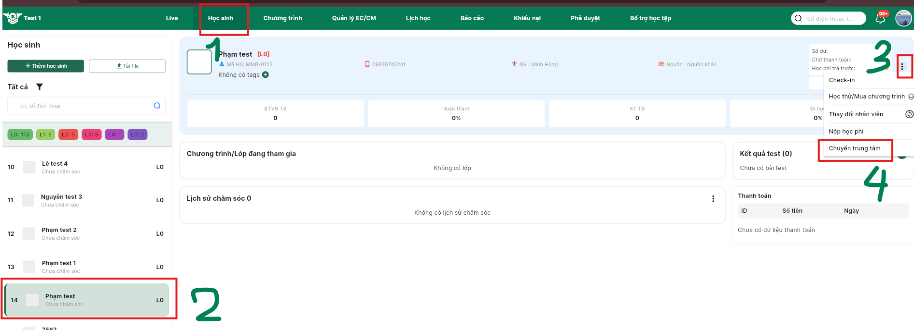
- Vào menu Học sinh.
- Chọn học sinh cần chuyển.
- Bấm ⋮.
- Chọn Chuyển trung tâm.
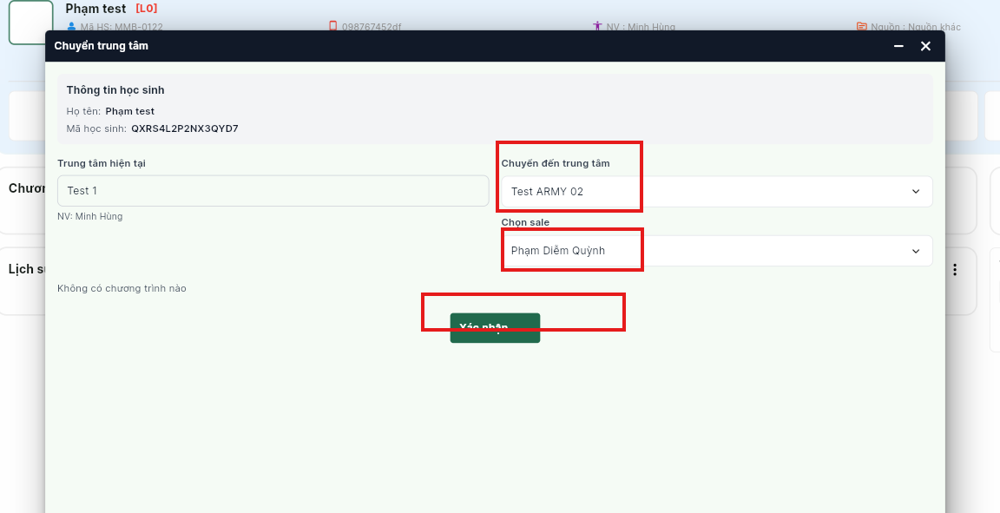
- Chọn trung tâm chuyển đến.
- Chọn nhân viên sale phụ trách tại trung tâm mới.
- Bấm Xác nhận → gửi phê duyệt.
Lưu ý: Sau khi chuyển trung tâm, toàn bộ dữ liệu quản lý học sinh sẽ thuộc về trung tâm mới.
💳 Nạp tiền & Hoàn tiền
Đây là 2 thao tác tài chính quan trọng, thực hiện trực tiếp tại hồ sơ học sinh. Cả hai hành động đều cần được GĐTT phê duyệt trước khi có hiệu lực trên hệ thống.
🟢 1. Nạp tiền
Tại popup chi tiết học sinh → bấm vào nút + bên cạnh số dư ⇒ chọn Nạp học phí.
- Nhập số tiền nạp.
- Nhập nội dung (tùy chọn).
- Bấm Nạp để gửi yêu cầu phê duyệt.
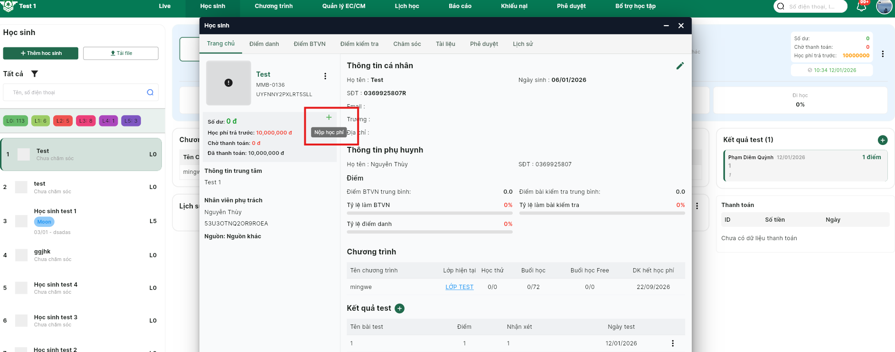
Lưu ý: Nạp tiền chỉ đưa tiền vào tài khoản ví học sinh. Muốn kích hoạt gói phí → cần thực hiện bước Thanh toán trong chương trình.
🔵 2. Hoàn tiền
Để hoàn lại tiền đã nạp nhầm, mở popup chi tiết học sinh → bấm dấu ⋮ (ba chấm) → chọn Hoàn tiền.
- Nhập số tiền hoàn.
- Nhập nội dung hoàn tiền.
- Số tiền hoàn phải bé hơn hoặc bằng số tiền chờ thanh toán.
- Bấm Xác nhận để gửi phê duyệt.
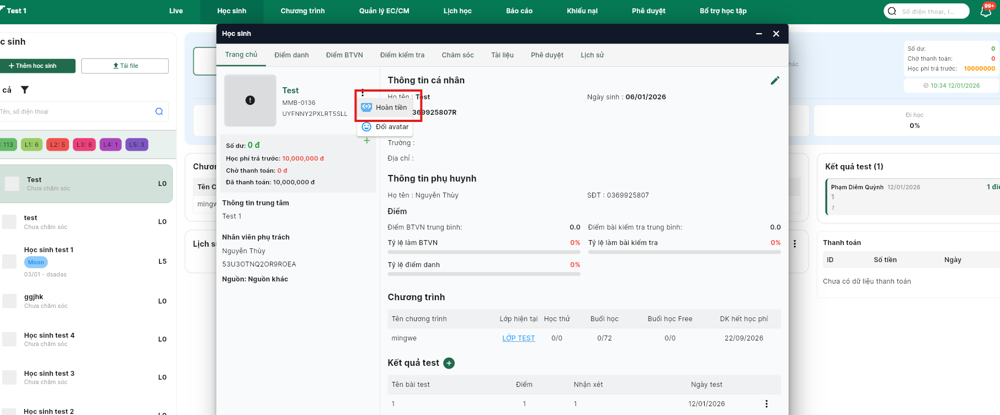
Thanh toán học phí
Sau khi đăng ký chương trình và phiếu nộp tiền đều đã được GĐTT phê duyệt, vào đúng Chương trình mà học sinh vừa đăng ký → tab Thanh toán.
Tại đây, nhân viên thao tác theo đúng loại khoản cần thu:
- Học sinh đóng fullfee → chọn Thanh toán.
- Học sinh chỉ đặt cọc → chọn Đặt cọc.
Nếu thao tác sai (ví dụ: nộp nhầm loại tiền hoặc nhầm số tiền), nhân viên có thể:
- Xóa khoản thanh toán vừa nhập.
- Xóa học sinh khỏi chương trình nếu việc đăng ký cũng sai hoàn toàn.
- Sau đó tiến hành đăng ký lại và thực hiện lại thanh toán đúng quy trình.

• Khi thêm thành công → báo CM để CM xếp lớp cho học sinh.
Lưu ý: Nhân viên không bắt buộc phải vào màn Chương trình để thao tác thanh toán.
Ngay tại màn chi tiết Học sinh, ở khối Thanh toán, có thể click trực tiếp vào ID thanh toán để mở chi tiết và thực hiện thanh toán tương ứng.
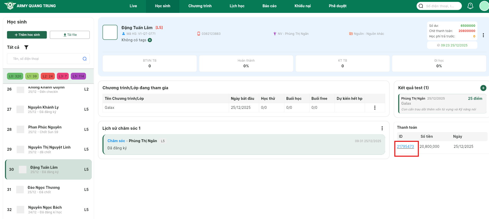
ID thanh toán (hiển thị màu xanh) cho phép truy cập nhanh vào màn hình xử lý thanh toán.
🗑️ Xử lý khi đăng ký nhầm chương trình, nhầm số tiền
Hủy hợp đồng để hệ thống rollback (hoàn tác) toàn bộ dữ liệu liên quan đến gói phí đã tạo trước đó. Chức năng này cần được cài phê duyệt sau đó phải được GĐTT.
Bước thao tác
- Vào menu Chương trình.
- Chọn chương trình mà học sinh đang đăng ký.
- Vào tab Học sinh.
- Tại danh sách học sinh, bấm vào biểu tượng hợp đồng để mở thông tin hợp đồng, sau đó click nút 3 chấm để bấm xoá hợp đồng .
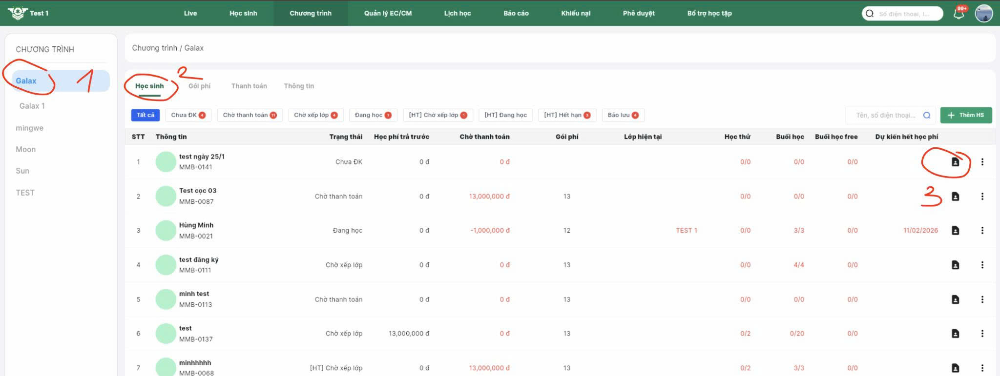
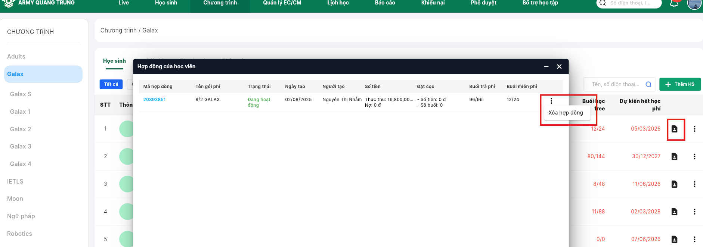
📌 Khi nào dùng Hủy hợp đồng?
- Mua nhầm chương trình – Ví dụ chọn sai gói phí, sai chương trình, sai số buổi. – Hủy hợp đồng sẽ xóa toàn bộ thanh toán và dữ liệu gói phí đã tạo nhầm, giúp bạn đăng ký lại chương trình đúng.
- Nhập sai số tiền – Nếu số tiền thanh toán gắn vào hợp đồng bị nhập sai → hủy hợp đồng để hệ thống tự xóa khoản thanh toán nhầm và tạo lại đúng.
-
Học sinh muốn nghỉ hẳn chương trình
– Hủy hợp đồng sẽ:
- Hoàn lại tiền vào tài khoản học sinh (nếu còn dư),
- Thu hồi toàn bộ số buổi chưa học gồm buổi trả phí & buổi miễn phí,
- Đưa học sinh về trạng thái “Chưa đăng ký” trong chương trình đó.
Sau khi hủy hợp đồng, xóa học sinh ra khỏi chương trình, sau đó bạn có thể tiến hành đăng ký chương trình mới. Còn nếu tái phí bạn có thể thực hiện luôn
🖼 Thêm ảnh học sinh
Bạn có thể thêm ảnh học sinh ngay trong màn chi tiết học sinh.
Cách thao tác:
- Vào tab Học sinh → chọn học sinh.
- Mở cửa sổ chi tiết → bấm ⋮ (ba chấm).
- Chọn Đổi avatar.
- Tải ảnh mới lên → Xác nhận.
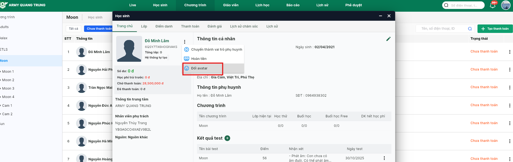
BÁO CÁO
Màn Báo cáo dùng để theo dõi toàn bộ hoạt động của trung tâm: Điểm danh, Chưa điểm danh, BTVN, Thiếu BTVN, Tái phí, Phải thu, Nạp tiền, Doanh số.
Danh sách các báo cáo nằm ở menu bên trái, cho phép chuyển nhanh giữa các loại dữ liệu.
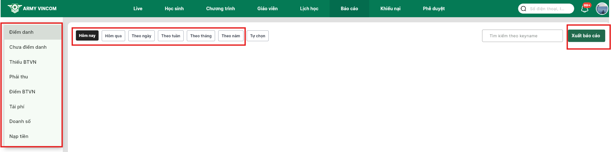
Tất cả báo cáo đều hỗ trợ bộ lọc thời gian: Hôm nay – Hôm qua – Theo ngày – Theo tuần – Theo tháng – Theo năm – Tự chọn. Khi xuất Excel bằng nút Xuất báo cáo, dữ liệu được xuất đúng theo bộ lọc đang hiển thị.
Lưu ý:
Chưa điểm danh và Thiếu BTVN là 2 báo cáo sử dụng mỗi ngày để kiểm soát việc sót điểm danh hoặc sót nhập BTVN → xử lý kịp trong thời hạn cho phép.
Phải thu chỉ nên xem theo ngày (lũy kế đến ngày đó). Đến hạn tái phí chỉ chạy vào ngày m1 hàng tháng ⇒ chỉ xem theo tháng.
Các báo cáo khác có thể xem theo bất kỳ bộ lọc thời gian nào.
📌 1. Báo cáo Điểm danh
Tỷ lệ điểm danh được tính dựa trên số học sinh đã có trạng thái: Đi học, Nghỉ có phép, Nghỉ không phép. Học sinh chưa được thao tác điểm danh ⇒ được tính vào chưa điểm danh.
Một buổi học được coi là “Chưa điểm danh” khi lớp đã diễn ra nhưng CM chưa thực hiện điểm danh trên CRM.
Hệ thống cho phép điểm danh bù trong 48 giờ kể từ lúc buổi học bắt đầu. Sau 48 giờ → khóa, không thể sửa và báo cáo ghi nhận cố định.
📌 2. Báo cáo BTVN (Bài tập về nhà)
Công thức tính:
Tỷ lệ BTVN = (Nộp đúng giờ + Nộp muộn) / (Nộp đúng giờ + Nộp muộn + Không làm)
Giáo viên / CM có thể bổ sung hoặc sửa điểm BTVN trong 7 ngày kể từ ngày học.
📌 3. Báo cáo Doanh số
Doanh số được chia thành 3 chỉ số rõ ràng:
- New: Doanh số học sinh mua mới lần đầu
- Renew: Doanh số tái phí / mua thêm sau kỳ đầu
- Total: Tổng = New + Renew
Lưu ý quan trọng: Nạp tiền chỉ là số tiền nạp vào tài khoản học sinh, không phải doanh thu. Doanh thu chỉ được ghi nhận khi học sinh Thanh toán gói phí.
📌 4. Báo cáo Đến hạn tái phí
Báo cáo này cho biết danh sách học sinh sắp hết buổi hoặc sắp hết thời hạn gói phí:
- Hết hạn trong tháng này
- Hết hạn trong tháng sau
- Hoặc các khoảng thời gian dài hơn
Báo cáo chạy cố định mỗi ngày 01 hàng tháng → chỉ xem theo tháng.
📌 5. Chưa điểm danh & Thiếu BTVN
Đây là 2 báo cáo quan trọng để CM kiểm soát sai sót thao tác:
- Chưa điểm danh: Buổi đã học nhưng chưa điểm danh
- Thiếu BTVN: Buổi đã học nhưng chưa nhập đánh giá BTVN
Trên màn Live đã có cảnh báo nhanh, nhưng báo cáo tại đây giúp xem chi tiết toàn bộ lịch sử.
📌 Cách đọc báo cáo theo tuần / tháng / năm
Khi lọc theo tuần / tháng / năm, số liệu trên màn danh sách là tổng của tất cả các ngày trong khoảng thời gian đó.
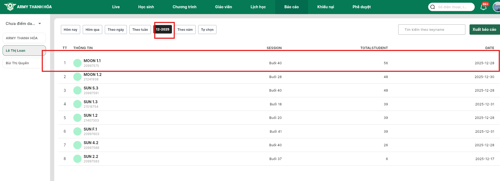
Ví dụ: Báo cáo Chưa điểm danh tháng 12 – TotalStudent = 56 là tổng của nhiều buổi học.
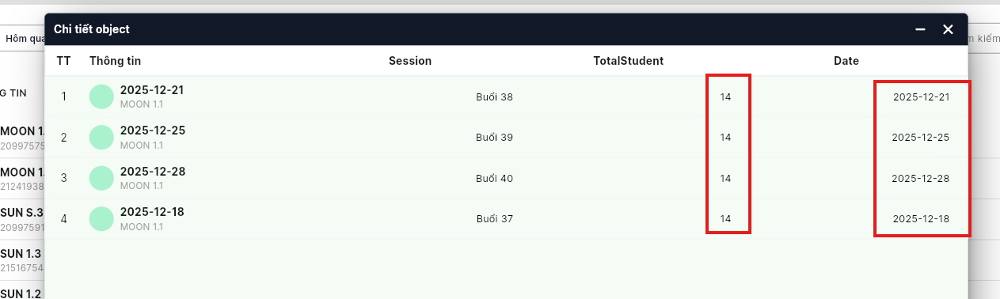
Nhấn Chi tiết → xem toàn bộ lịch sử từng ngày tạo nên con số tổng.
Nguyên tắc hiển thị:
– Danh sách = số tổng hợp
– Chi tiết = lịch sử phát sinh
Hủy buổi học
Chức năng Hủy buổi học được sử dụng khi lớp không học trong ngày dự kiến (ví dụ: nghỉ đột xuất…). Việc hủy chỉ được thực hiện trước hoặc trong lúc buổi học đang diễn ra. Khi buổi học đã kết thúc → không thể hủy.
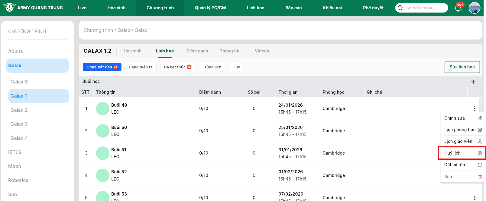
- Vào Lớp học → mở tab Lịch học.
- Chọn buổi muốn hủy → bấm ⋮ (menu thao tác).
- Chọn Hủy lịch.
- Nhập lý do hủy buổi học → bấm Xác nhận.
- Sau khi hủy thành công, mở lại menu ⋮ và bấm Đặt lại tên để hệ thống cập nhật lại đúng thứ tự buổi học.
LỚP LÊN TRÌNH ĐỘ
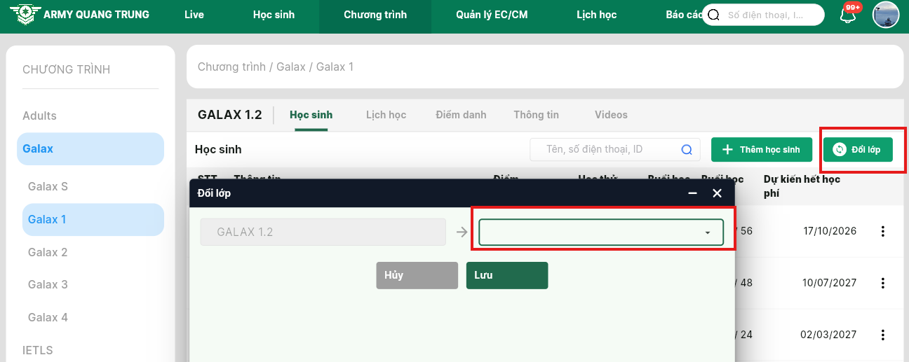
Khi lớp kết thúc và chuyển sang trình độ cao hơn (ví dụ: Sun 1 → Sun 2), tuyệt đối không đổi tên lớp cũ thành tên lớp mới. Điều này sẽ làm sai toàn bộ lịch sử học – buổi học – báo cáo.
Quy trình đúng:
- Tạo một lớp mới (ví dụ Sun 2) → thiết lập thông tin, giáo viên, số buổi.
- Tạo và cài đặt lịch học cho lớp Sun 2 như một lớp mới hoàn toàn.
- Mở lớp hiện tại (Sun 1) → chọn Đổi lớp.
- Chọn lớp đích (Sun 2) → Lưu.
Lưu ý quan trọng:
– Chức năng Đổi lớp hiện chỉ áp dụng cho học sinh trong cùng chương trình.
– Nếu học sinh cần chuyển sang chương trình khác → nhân viên phải
xóa học sinh ra khỏi lớp cũ, sau đó thêm lại học sinh vào lớp thuộc chương trình mới.
– Hãy kiểm tra lại số buổi còn lại và ngày dự kiến kết thúc sau khi đổi lớp.
Hướng dẫn nhanh:
– Tạo lớp
– Cài lịch học
📚 Tổng quan về trung tâm
🏫 1. Cài đặt trung tâm (phòng học, nhân viên, giáo viên)
Tất cả cấu hình vận hành của trung tâm đều nằm trong menu Avatar góc phải → Cài đặt trung tâm. Tại đây, bạn có thể quản lý phòng học, phòng ban, nhân viên, đánh dấu Sale và giáo viên.
📌 Phòng học
Dùng để tạo các phòng học phục vụ cho việc xếp lịch. Bấm + Tạo phòng học → nhập Tên phòng, Số ghế, Trạng thái → lưu. Phòng học có thể chỉnh sửa hoặc xoá sau khi tạo.
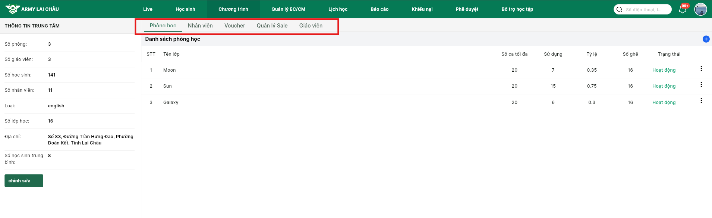
📌 Phòng ban & Nhân viên
Tạo Phòng ban → thêm nhân viên bằng SĐT (SĐT là định danh đăng nhập của nhân viên). Sau khi thêm, gán nhân viên vào phòng ban & chức vụ tương ứng.
Nếu nhân viên làm Sales, cần bấm Đánh dấu là Sale để họ có quyền thao tác với học sinh (nhập data – chăm sóc – đăng ký chương trình).
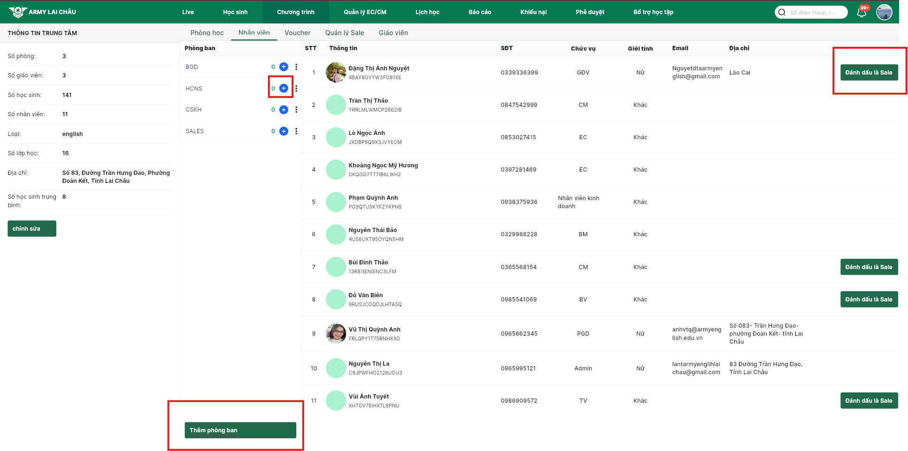
📌 Voucher
Xem danh sách Voucher để biết các ưu đãi đang được áp dụng tại trung tâm (dùng khi Sale đăng ký chương trình cho học sinh).
📌 Giáo viên
Thêm giáo viên bằng số điện thoại → nhập thông tin cá nhân → gán trung tâm & phòng ban. Sau khi lớp được tạo, vào tab Lớp phụ trách của giáo viên để gán họ vào lớp.
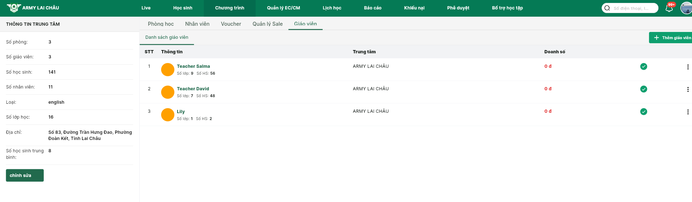
📚 2. Tạo lớp
Trong mỗi Chương trình sẽ có các Danh mục lớp (Category). Bạn cần chọn đúng danh mục (VD: Sun 1, Sun 2, Galax 1, Galax 2…) trước khi tạo lớp để lớp được nằm đúng chương trình con.
🧭 Cách tạo đúng lớp trong đúng chương trình
Ví dụ: bạn đang ở chương trình Sun – muốn tạo lớp trong Sun 1 → click “Sun 1”. – muốn tạo lớp trong Sun 2 → click “Sun 2”. (Tương tự với Galax 1, Galax 2, Adults, Kids…)
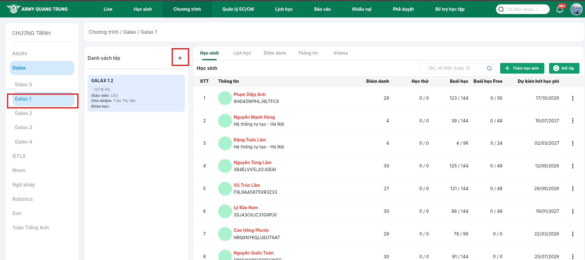
🗓️ 3. Cài lịch học
🧩 Lịch tự động
- Vào Chương trình → Lớp → Lịch học.
- Bấm Tạo lịch học.
- Chọn Phòng*, Buổi học*, Bắt đầu*, Kết thúc*.
- Chọn Giáo viên cho từng dòng.
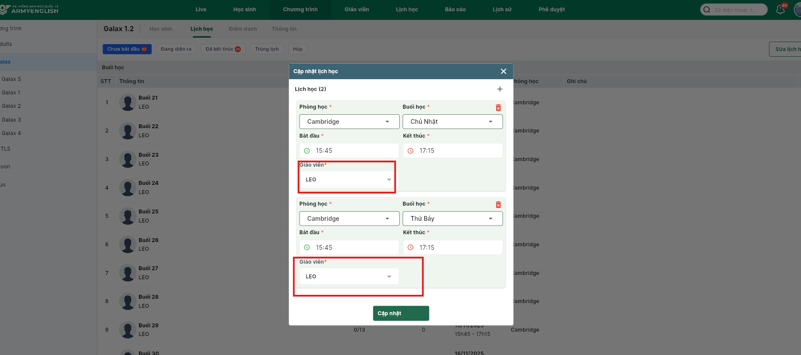
🧩 Lịch thủ công
- Bấm Tạo buổi học.
- Nhập tên bài học, giáo viên, phòng, ngày, giờ.
- Lưu lại.
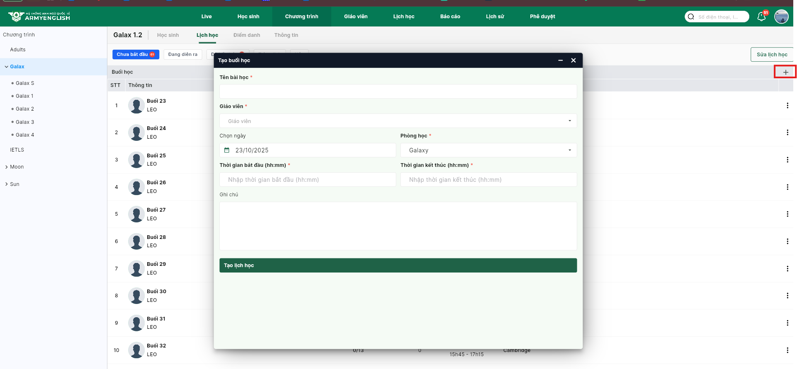
👥 4. Thay đổi nhân viên phụ trách học sinh
Chức năng này chỉ Giám đốc trung tâm (GĐTT) có quyền thực hiện. Sau khi thay đổi, toàn bộ quyền thao tác với học sinh (check-in, test, đăng ký, chăm sóc…) được chuyển sang nhân viên mới, đồng thời lịch sử chăm sóc vẫn được giữ nguyên.
📌 TH1 — Thay đổi nhân viên cho từng học sinh
- Vào menu Học sinh → tìm và click vào học sinh cần đổi nhân viên.
- Tại khung thông tin bên phải, bấm nút ⋮ (ba chấm).
- Chọn Thay đổi nhân viên.
- Chọn nhân viên mới → bấm Xác nhận.
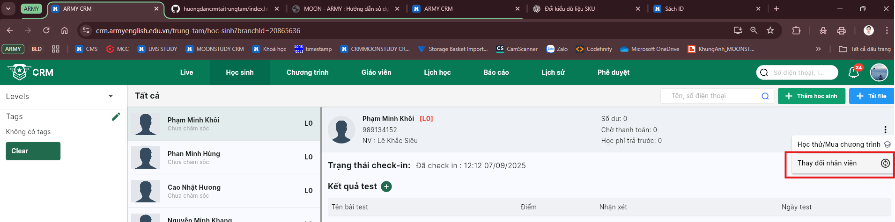
Thay đổi nhân viên cho từng học sinh
👥 TH2 — Thay đổi nhân viên cho một nhóm học sinh
- Bấm vào avatar (góc phải trên cùng) → chọn Chuyển học sinh.
- Chọn nhân viên cũ ở ô bên trái.
- Chọn nhân viên mới ở ô bên phải.
- Có thể chọn Chọn tất cả hoặc chọn từng học sinh.
- Bấm Xác nhận để chuyển toàn bộ học sinh sang nhân viên mới.

Chuyển nhóm học sinh sang nhân viên mới
🛠️ 5. Cài đặt người phê duyệt
Trung tâm có thể tự cấu hình quy trình phê duyệt cho các hành động như: Nộp tiền, Hoàn tiền, Đăng ký chương trình, Bảo lưu, Xóa hợp đồng, Đổi gói phí…
Một hành động có thể gồm nhiều step duyệt (ví dụ: Leader duyệt → GĐTT duyệt), giúp kiểm soát chặt chẽ hơn.
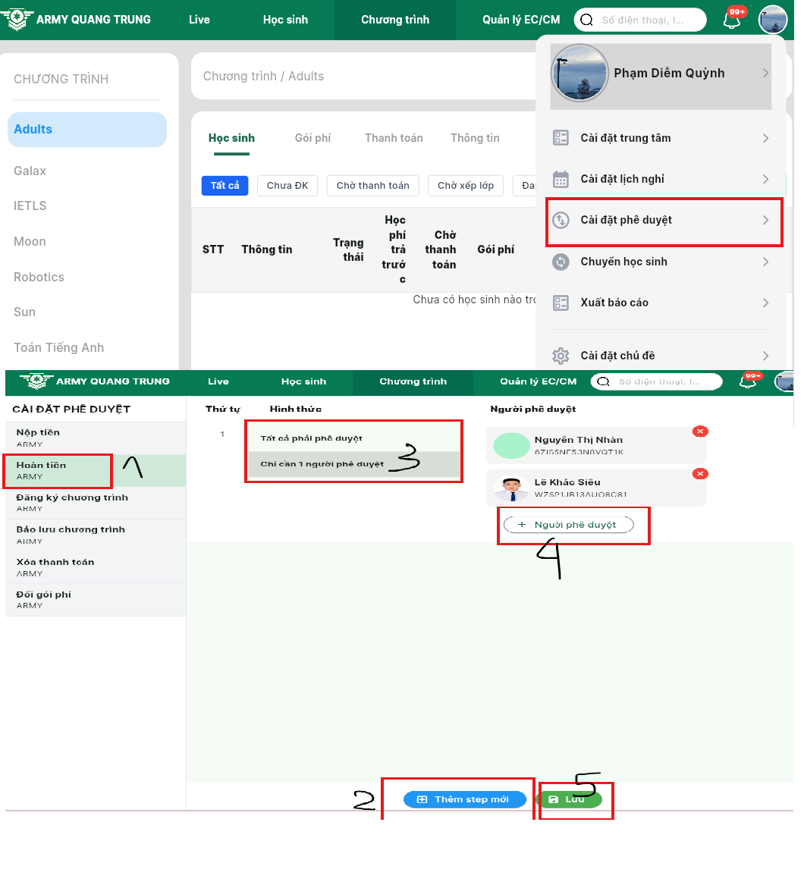
🔎 Các bước thao tác
- Chọn hành động cần cài đặt (ví dụ: Nộp tiền, Hoàn tiền, Đăng ký chương trình…).
- Thêm step phê duyệt bằng nút + Thêm step mới. Một hành động có thể có 1 hoặc nhiều step tùy nhu cầu quản lý.
-
Chọn hình thức phê duyệt của từng step:
- Chỉ cần 1 người phê duyệt → chỉ cần 1 người trong danh sách bấm “Duyệt”.
- Tất cả phải phê duyệt → tất cả người được gán phải cùng duyệt thì step mới hoàn thành.
- Thêm người phê duyệt cho step đó bằng nút + Người phê duyệt. Bạn có thể thêm nhiều người cho cùng một step (Leader, CM, GĐTT…).
- Sau khi cài đặt xong, bắt buộc bấm “Lưu” để hệ thống áp dụng quy trình mới.
Mỗi hành động có thể có quy trình phê duyệt riêng → giúp trung tâm linh hoạt kiểm soát theo từng loại nghiệp vụ.
SALES – MÀN HỌC SINH
➕ 1. Thêm data
CRM cho phép thêm học sinh bằng hai cách: Thêm thủ công hoặc Tải file (thêm tự động). Hai nút này nằm ở góc trái phía trên màn Học sinh.
1.1. Thêm học sinh thủ công
Bấm nút + Thêm học sinh để mở cửa sổ tra cứu SĐT/username.
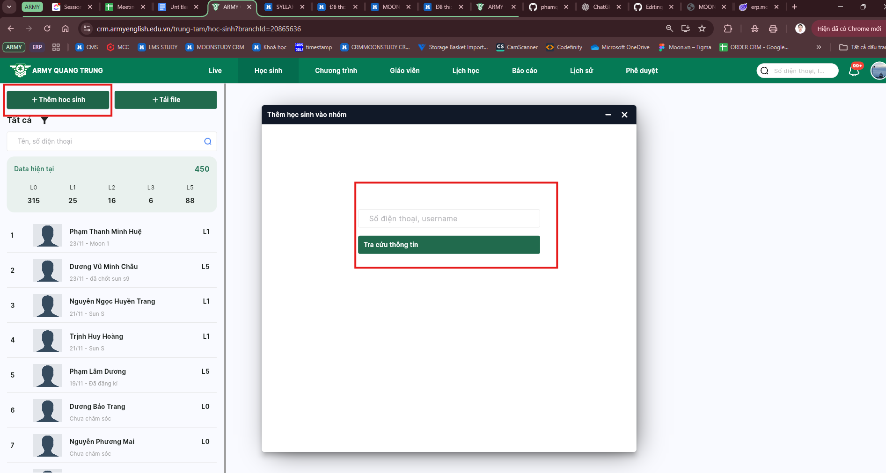
Bước 1: Tra cứu học sinh trước khi tạo mới
Nếu phụ huynh có nhiều con, thêm 1 ký tự vào cuối SĐT để tạo định danh cho học sinh (ví dụ: 0988123456A, 0988123456B…)
Nếu không tìm thấy tài khoản → hệ thống mở form tạo mới:
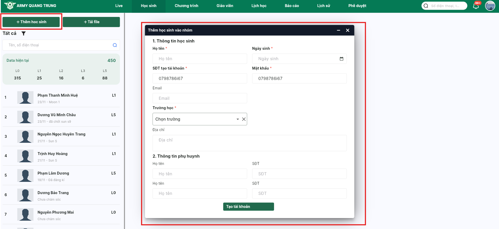
Form tạo tài khoản học sinh
- Nhập Họ tên, Ngày sinh, SĐT tạo tài khoản (*) và Mật khẩu.
- Điền Email, Địa chỉ (nếu có).
- Chọn Trường học.
- Điền thông tin phụ huynh (tuỳ chọn).
- Bấm Tạo tài khoản để hoàn tất.
Lưu ý: SĐT là định danh cố định, không sửa được sau khi tạo.
1.2. Thêm tự động (Upload danh sách)
Dùng khi thêm nhiều học sinh cùng lúc. Tải file mẫu tại: Mẫu upload học sinh (Google Sheets).
-
Điền dữ liệu theo đúng cột của file mẫu.
Các cột bắt buộc: Họ tên – Ngày sinh – SĐT tạo tài khoản.
Nếu phụ huynh có nhiều con → thêm ký tự A/B/C vào cuối SĐT. -
Định dạng file: Phải để tất cả cột ở dạng Text / Plain text
để tránh lỗi ngày tháng hoặc mất số 0 đầu.
Lưu file dưới dạng
.xlsx. - Trên CRM → tab Học sinh → bấm + Tải file.
-
Trong popup tải file:
– Chọn nhân viên (Sale) phụ trách.
– (Tuỳ chọn) Chọn nguồn & thêm Tags.
– Chọn file.xlsx→ bấm Tải lên. - Hệ thống sẽ kiểm tra dữ liệu: nếu file có lỗi → thông báo để sửa và tải lại.
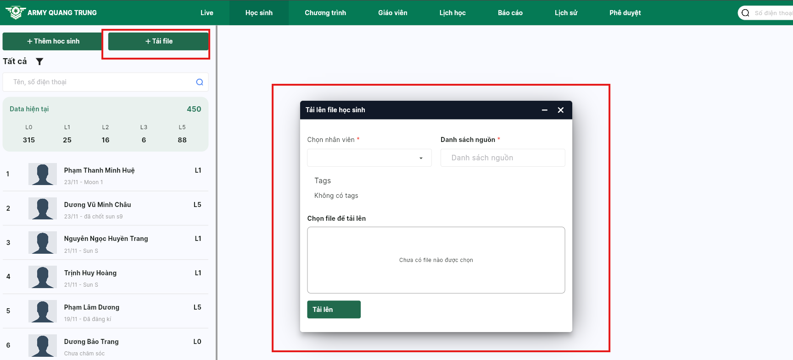
Giao diện tải file học sinh lên CRM
📈 2. Chăm sóc học sinh
Chăm sóc học sinh bao gồm quản lý Level, Tags và Lịch sử chăm sóc. Đây là công cụ để Sale theo dõi tiến trình, phân loại và ghi chú trạng thái.
2.1. Level chăm sóc
Level thể hiện giai đoạn chăm sóc của học sinh từ L0 → L5. Level càng cao → mức độ tiềm năng càng lớn.
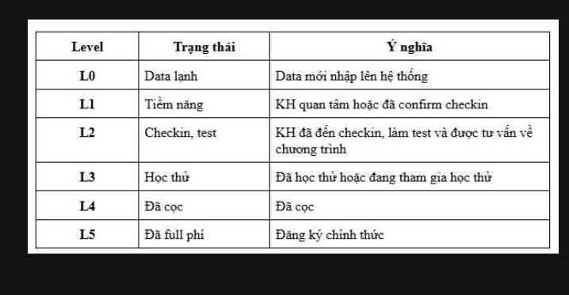
2.2. Tags & Bộ lọc chăm sóc
Tag dùng để phân loại học sinh theo chiến dịch, nguồn data hoặc theo từng Sale. Sale tạo tag → chỉ Sale đó nhìn thấy.
Bộ lọc hỗ trợ lọc theo:
- Nhân viên phụ trách
- Level
- Tags
Để tạo/sửa Tag → mở phần lọc Tags → bấm biểu tượng ✏️ (bút).
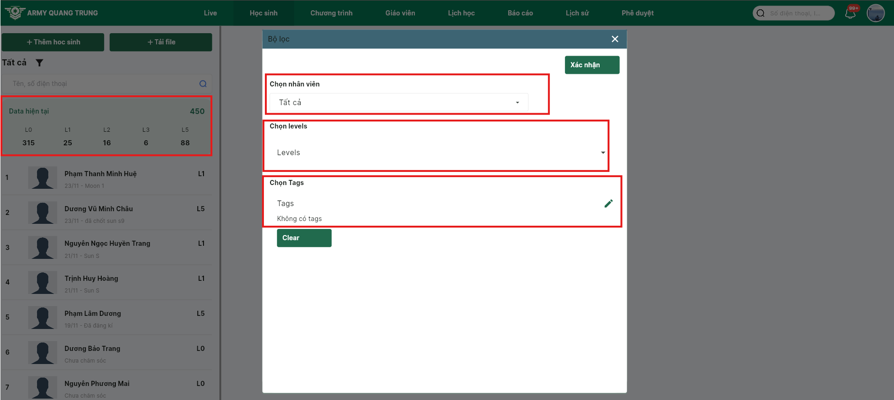
2.3. Thêm lịch sử chăm sóc
Để thêm ghi chú chăm sóc:
- Chọn học sinh.
- Tại khung Lịch sử chăm sóc → bấm ⋮.
- Chọn Thêm mới ghi chú → chọn Level → điền nội dung → Lưu.
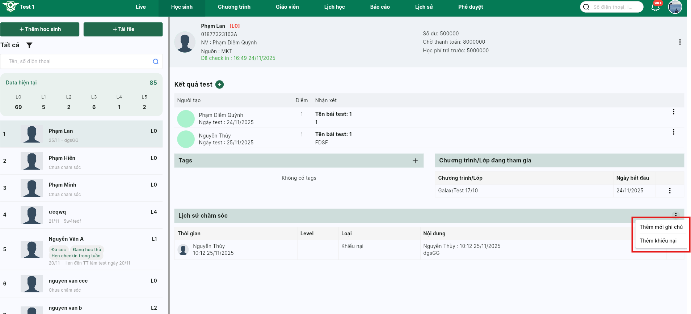
2.4. Thêm & xử lý Khiếu nại
Nếu học sinh/phụ huynh có vấn đề phản ánh, Sale có thể tạo khiếu nại.
- Tại Lịch sử chăm sóc → bấm ⋮ → Thêm khiếu nại.
- Nhập nội dung → Lưu.
- Mỗi khiếu nại có menu ⋮ riêng → chọn Thêm xử lý.

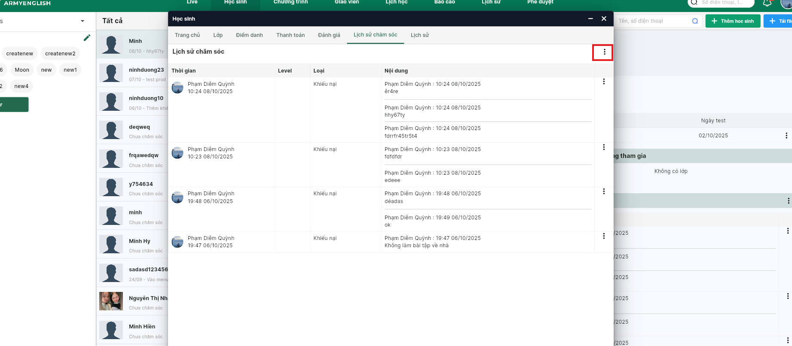
🎓 3. Đăng ký học thử / cọc / fullfee
Tất cả các yêu cầu phê duyệt trong CRM đều hỗ trợ tải file PDF để bổ sung chứng từ. Xem hướng dẫn chi tiết tại mục File đính kèm trong hành động phê duyệt.
Trước khi đăng ký chương trình, học sinh cần hoàn tất:
- Check-in
- Nhập kết quả test tại khung Test

3.1. Đăng ký học thử / học fullfee
Bước 1 — Chọn chương trình
Mở hồ sơ học sinh → menu ⋮ → Học thử / Mua chương trình.
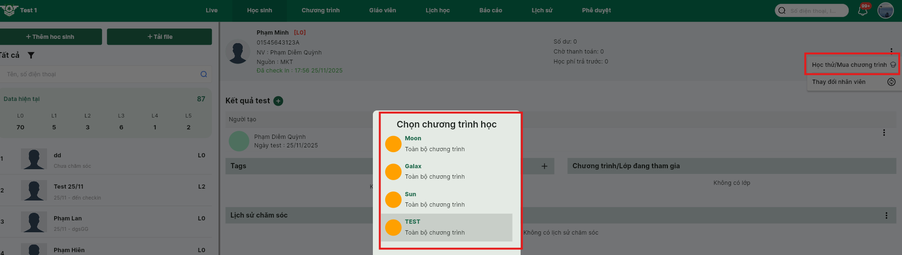

⭐ TH1 — Đăng ký học thử
- Tích chọn ô Học thử.
- Nhập số buổi (tối đa 3 buổi).
- Bấm Thêm học sinh vào chương trình.
⭐ TH2 — Đăng ký học fullfee
Không chọn “Học thử”, sau đó:
- Chọn Gói phí
- Chọn Voucher (nếu có)
- Nhập Giảm trừ khác nếu số tiền nộp khác giá gói
- Điền Nội dung (nếu cần)
Hệ thống hiển thị tự động:
- Số tiền thực tế phải đóng
- Số buổi thực tế
→ Nếu đúng → Thêm học sinh vào chương trình.
🔎 Bước 2 — Check phê duyệt

Mở Phê duyệt → Đề nghị của tôi để theo dõi trạng thái → báo GĐTT duyệt.
💰 Bước 3 — Nộp tiền
Tại nút 3 chấm → bấm + + → nhập số tiền và nội dung → Nộp.
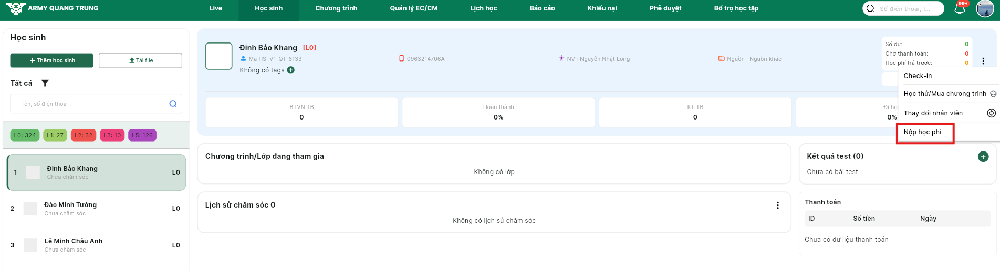
Phiếu nộp → chuyển sang quy trình phê duyệt.
💳 Bước 4 — Thanh toán
Sau khi đăng ký chương trình và phiếu nộp tiền đều đã được GĐTT phê duyệt, vào đúng Chương trình mà học sinh vừa đăng ký → tab Thanh toán.
Tại đây, nhân viên thao tác theo đúng loại khoản cần thu:
- Học sinh đóng fullfee → chọn Thanh toán.
- Học sinh chỉ đặt cọc → chọn Đặt cọc.
Nếu thao tác sai (ví dụ: nộp nhầm loại tiền hoặc nhầm số tiền), nhân viên có thể:
- Xóa khoản thanh toán vừa nhập.
- Xóa học sinh khỏi chương trình nếu việc đăng ký cũng sai hoàn toàn.
- Sau đó tiến hành đăng ký lại và thực hiện lại thanh toán đúng quy trình.
• Khi thêm thành công → báo CM để CM xếp lớp cho học sinh.
3.2. Đặt cọc
Quy trình bước 1–3 giống 3.1. Tại bước thanh toán → Sale chọn “Đặt cọc”.

- Số tiền cọc tối thiểu: 1.000.000đ
- Số buổi cọc tối đa: 8 buổi
Mục đích: cho học sinh đi học thử trong thời gian chờ hoàn phí. Nếu hết 8 buổi mà chưa đóng fullfee → hệ thống tự đưa HS ra khỏi lớp.
🔄 Đổi gói phí khi học sinh đang cọc
Học sinh chỉ đổi gói khi trạng thái đang là Cọc.
Bước 1 — Chọn “Đổi gói phí”

Bước 2 — Chọn gói mới

Lưu ý:
- Điền số tiền cọc đã đóng vào ô Giảm trừ khác.
- Nếu có thêm giảm trừ mới → cộng vào đây.
Bước 3 — Phê duyệt đổi gói

Sau phê duyệt → kiểm tra số tiền còn phải đóng & số buổi đã cập nhật đúng.
CM – MÀN CHƯƠNG TRÌNH
👨👩👧👦 1. Quản lý học sinh trong chương trình
Tại tab Học sinh của mỗi Chương trình, CM thực hiện toàn bộ nghiệp vụ: thêm học sinh, tái phí, đổi chương trình, bảo lưu, hoặc xóa học sinh khỏi chương trình.
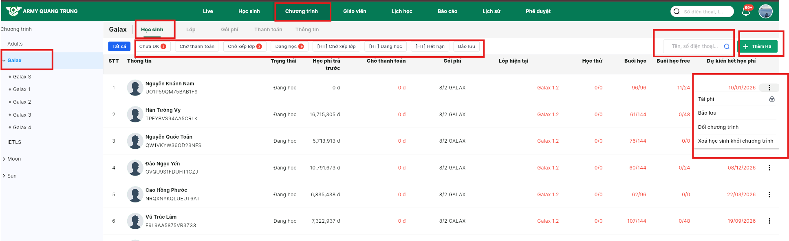
1.1. Thêm học sinh vào chương trình
- Mở Chương trình → chọn chương trình → tab Học sinh.
- Bấm Thêm HS.
- Điền gói phí, voucher, giảm trừ khác…
- Bấm Thêm học sinh vào chương trình.
- Yêu cầu sẽ được gửi sang Phê duyệt.
1.2. Tái phí
Tất cả các yêu cầu phê duyệt trong CRM đều hỗ trợ tải file PDF để bổ sung chứng từ. Xem hướng dẫn chi tiết tại mục File đính kèm trong hành động phê duyệt.
Áp dụng cho: Học sinh đang Chờ xếp lớp hoặc Đang học.
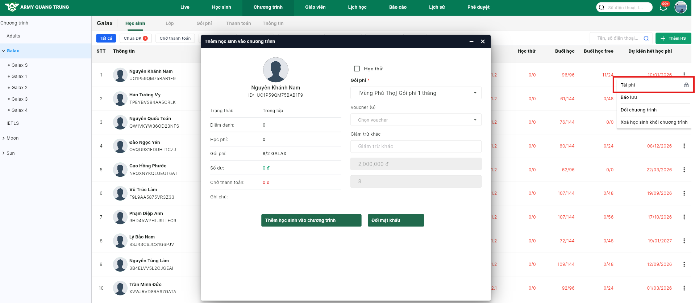
- Vào chương trình hiện tại → tab Học sinh.
- Bấm ⋮ → chọn Tái phí.
- Chọn gói phí cần tái phí → điền giảm trừ nếu có → bấm Xác nhận.
-
Sau khi thêm yêu cầu tái phí, phải thực hiện đầy đủ quy trình:
- Nếu học sinh cần nộp thêm tiền → xem mục Nạp tiền / Hoàn tiền.
- Sau khi cả đăng ký tái phí + phiếu nộp tiền đều được duyệt → vào tab Thanh toán để thực hiện Thanh toán học phí.
- Theo dõi tiến trình duyệt tại Phê duyệt hành động.
1.3. Đổi chương trình
Điều kiện:
- HS đã ra khỏi lớp cũ
- Trạng thái: Chờ xếp lớp
- Đã đóng đủ phí của chương trình hiện tại
- Nếu đang bảo lưu → hủy bảo lưu trước
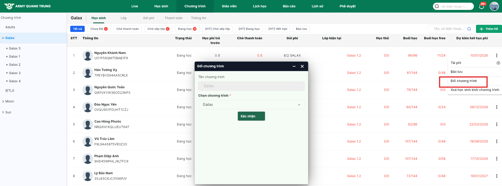
- Vào tab học sinh → lọc Chờ xếp lớp.
- Bấm ⋮ → Đổi chương trình.
- Chọn chương trình mới → Xác nhận.
1.4. Bảo lưu
- Vào tab Học sinh → bấm ⋮.
- Chọn Bảo lưu.
- Nhập lý do → Gửi phê duyệt.
Lưu ý quan trọng: Học sinh chỉ được tính là bảo lưu khi đã được phê duyệt. Trong thời gian đang Chờ phê duyệt, học sinh vẫn được xem là đang học bình thường → hệ thống vẫn tiếp tục tính buổi học và tính phí.
Có thể kiểm tra lịch sử bảo lưu tại tab Trạng thái → Bảo lưu trong hồ sơ học sinh.
1.5. Xóa học sinh khỏi chương trình
Chỉ xóa được khi:
- HS không còn bất kỳ khoản thanh toán nào trong chương trình
- Nếu còn → cần xóa hợp đồng trước
- Bấm ⋮ tại dòng học sinh.
- Chọn Xóa học sinh khỏi chương trình.
- Xác nhận khi hệ thống báo đủ điều kiện.
1.6. Thêm khiếu nại
Trong tab Học sinh của lớp, CM có thể tạo khiếu nại cho từng học sinh. Khiếu nại được dùng để ghi nhận các vấn đề phát sinh trong quá trình học như nội dung lớp, giáo viên, dịch vụ…
- Vào Chương trình → Lớp học → tab Học sinh.
- Tại dòng học sinh cần ghi nhận khiếu nại → bấm ⋮.
- Chọn Thêm khiếu nại.
- Nhập nội dung khiếu nại → Xác nhận.
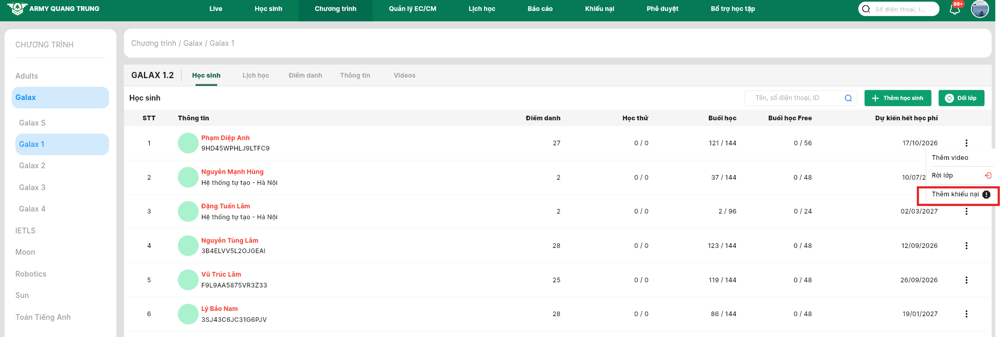
✏️ 2. Cài đặt & chỉnh sửa lớp học
Bao gồm việc tạo lớp mới (tham khảo mục “3. Tạo lớp” bên trên) và chỉnh sửa lớp đã có tại tab Lớp của từng chương trình.
Chỉnh sửa lớp học
- Vào Chương trình → Lớp.
- Bấm ⋮ → Chỉnh sửa.
- Cập nhật giáo viên, nhân viên hỗ trợ, ngày bắt đầu – kết thúc, avatar lớp…
- Bấm Cập nhật.
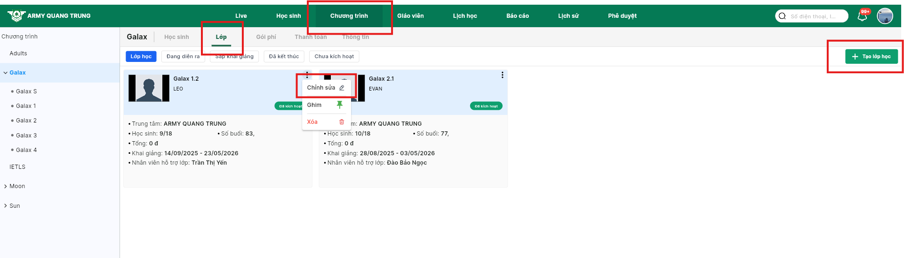
Sau khi cập nhật, dữ liệu được áp dụng ngay cho xếp lớp – lịch học – điểm danh – nhận xét.
📆 3. Màn Lịch học – theo dõi lịch theo ngày/tuần/tháng
Mở menu Lịch học để xem toàn bộ hoạt động của trung tâm theo các chế độ: Ngày – Tuần – Tháng.
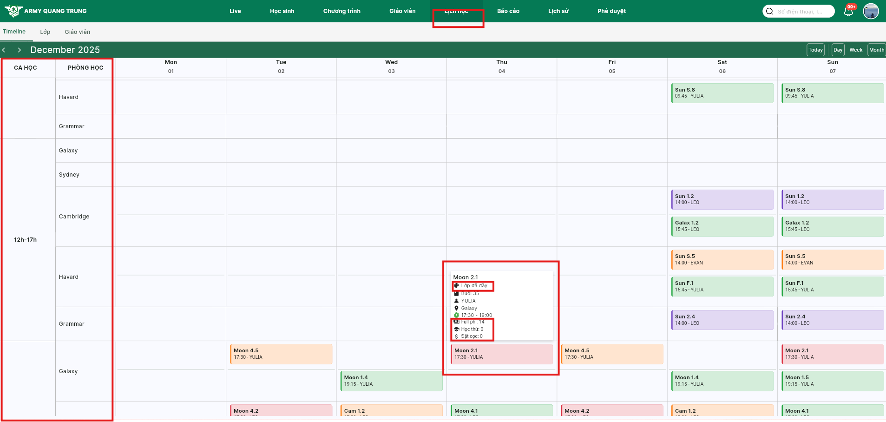
🔍 Thông tin khi di chuột vào buổi học
- Tên lớp – Buổi số
- Giáo viên – Phòng – Khung giờ
- Số HS fullfee / cọc / học thử
- Trạng thái: đang học – đã đầy – trùng lịch…
📂 Các chế độ xem
- Timeline: theo phòng & khung giờ
- Lớp: danh sách lớp có buổi trong ngày
- Giáo viên: lịch dạy của từng GV
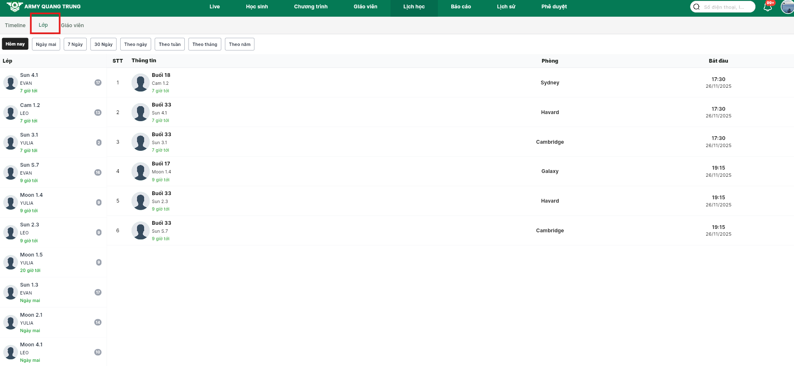
🧩 Thao tác trực tiếp trên màn Lịch học
- Điểm danh
- Nghỉ phép
- Hủy điểm danh
- Xem danh sách học sinh theo buổi
- Mở buổi học để chỉnh sửa
🟢 4. Điểm danh & nhận xét BTVN,buổi học
Khi click vào một buổi học trên màn Lịch học → hệ thống mở cửa sổ thao tác nhanh cho phép:
- Điểm danh học sinh
- Ghi nhận trạng thái đi học (đi sớm – đúng giờ – đi muộn)
- Đánh dấu nghỉ học (có phép / không phép)
- Nhập điểm bài tập & nhận xét Bài tập về nhà hoặc bài học trên lớp
📌 Quy định chung về điểm danh & nghỉ phép
Các quy định áp dụng thống nhất trong mọi buổi học:
- Điểm danh / Hủy điểm danh được thao tác từ 1 giờ trước giờ học đến 48 giờ sau khi buổi học kết thúc.
- Nghỉ học có phép chỉ được tích từ 1 giờ trước giờ học và đúng ngày diễn ra buổi học.
- Đi sớm – check-in trước giờ học
- Đúng giờ – check-in trong khoảng thời gian cho phép
- Đi muộn – check-in sau giờ bắt đầu
- Nghỉ có phép – không tính buổi & không trừ học phí
- Nghỉ không phép – bị tính buổi học bình thường
- Nộp đúng giờ
- Nộp muộn
- Không làm bài
- Nghỉ học
- Nếu học sinh nộp đúng giờ hoặc nộp muộn → phải nhập Số câu đúng & Tổng số câu.
- Nếu Không làm hoặc Nghỉ học → được phép để trống hai ô nhập điểm.
- Hệ thống tự tính điểm nếu có dữ liệu.
📘 1. Quy tắc điểm danh
Hệ thống ghi nhận điểm danh theo 3 nhóm:
✔ 1) Học sinh tự điểm danh
Khi học sinh tự check–in qua faceid → hệ thống tự xác định:
✔ 2) Nhân viên điểm danh thủ công
Khi Sale/CM/GĐTT tích chọn học sinh → chọn trạng thái phù hợp (đi sớm – đúng giờ – đi muộn).
✔ 3) Học sinh nghỉ học
📝 2. Nhập điểm & nhận xét
📌 Lưu ý về nhận xét BTVN
Việc nhập nhận xét và điểm BTVN phải được thực hiện trong vòng 07 ngày kể từ ngày diễn ra buổi học. Sau thời hạn này, hệ thống sẽ khóa thao tác và ghi nhận học sinh ở trạng thái Không có điểm BTVN.
Nếu buổi học không được nhập BTVN đúng hạn, điểm BTVN của học sinh không được tính vào điểm trung bình, đồng thời CM, lớp và giáo viên cũng không được tính điểm tổng hợp liên quan.
Sau khi điểm danh xong, trong cùng cửa sổ thao tác sẽ có phần nhập điểm bài tập & đánh giá.
Mỗi buổi học sẽ có trạng thái BTVN (Homework) để xác định buổi đó
có hoặc không có bài tập về nhà.
Mặc định hệ thống sẽ để là Có BTVN. Trường hợp buổi học
không có BTVN của buổi trước thì người dùng
có thể điều chỉnh lại trạng thái này.
Dạ
Việc chỉnh sửa chỉ thực hiện được khi lớp học chưa kết thúc:
vào nút 3 chấm ở buổi học → tích / bỏ tích Homework
để cập nhật.

✔ 2.1 Trạng thái nhận xét (bắt buộc)
Mỗi học sinh phải có một trong bốn trạng thái sau:
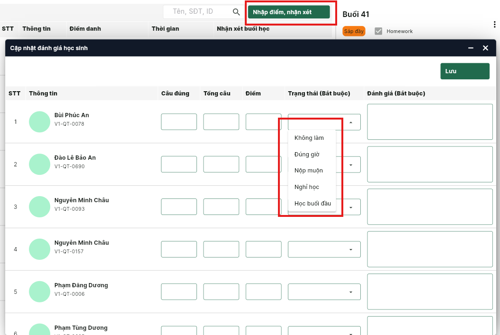
✔ 2.2 Quy tắc nhập điểm
🔄 5. Đổi học sinh sang lớp khác (cùng chương trình)
Dùng khi trung tâm cần chuyển tất cả học sinh từ một lớp cũ sang lớp mới nhưng vẫn nằm trong cùng một chương trình.

📘 Quy tắc
- Chỉ áp dụng cho cùng chương trình.
- Toàn bộ học sinh trong lớp cũ sẽ được chuyển sang lớp mới.
- Các thông tin học sinh (phí, trạng thái, lịch sử…) đều giữ nguyên.
🧭 Cách thao tác
- Vào menu Chương trình.
- Chọn chương trình → chọn Lớp học.
- Tại góc phải màn hình lớp → bấm nút Đổi lớp.
- Nhập tên lớp mới cần chuyển đến.
- Bấm Lưu để hoàn tất.
Sau khi lưu, toàn bộ học sinh của lớp cũ sẽ tự động xuất hiện trong lớp mới. Lớp cũ không bị xóa, chỉ chuyển danh sách học sinh sang lớp mới.
6. Upload tài liệu, hình ảnh & video CTP
Upload tài liệu / hình ảnh học sinh:
Vào Học sinh → chọn học sinh cần upload → tab Tài liệu → Tạo mới → tải file lên.
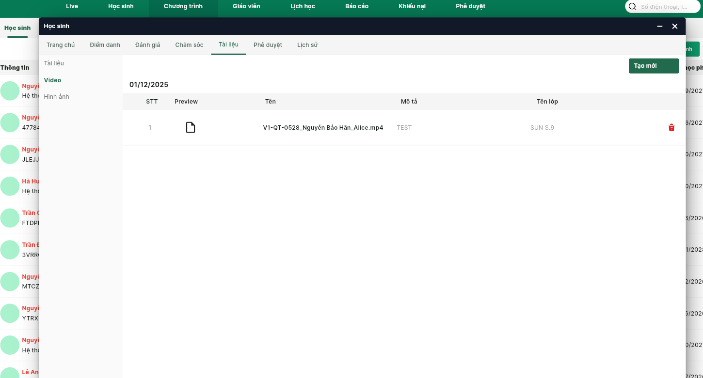
Upload video CTP:
Vào Chương trình → chọn lớp học → tab Học sinh → tại học sinh cần upload, bấm nút 3 chấm → Thêm video → chọn tháng → upload video.
Sau khi video upload xong, có thể xem tại Preview. Video sau khi được gắn với học sinh + lớp học sẽ hiển thị:
- Trong Chi tiết học sinh
- Trong tab Video của lớp học
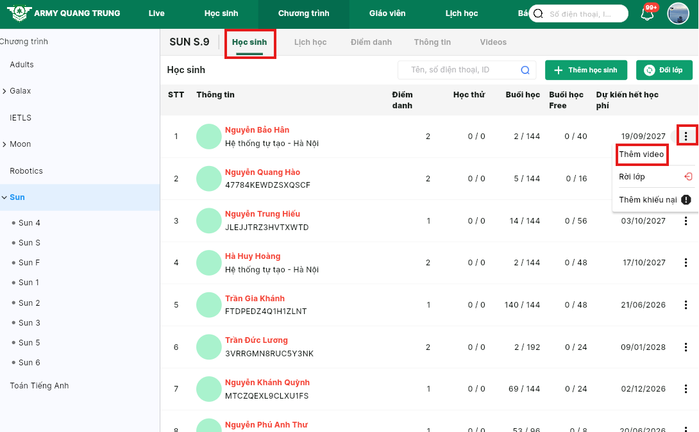